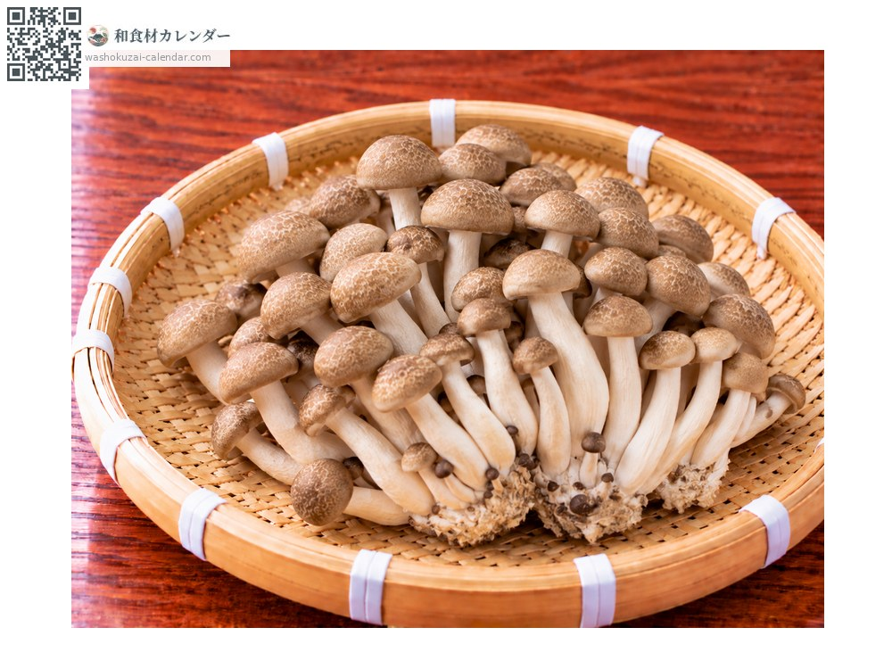
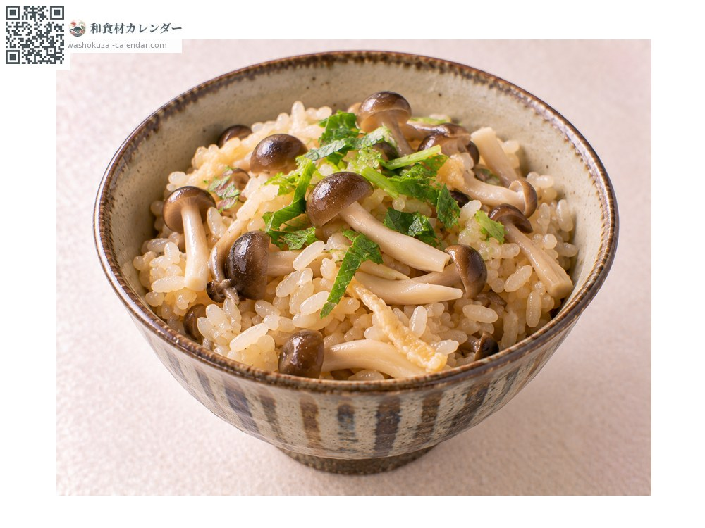
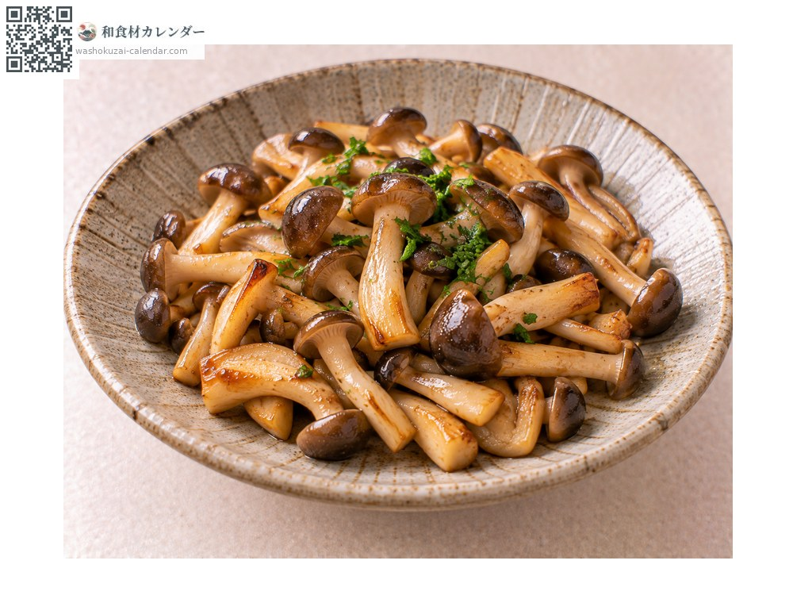
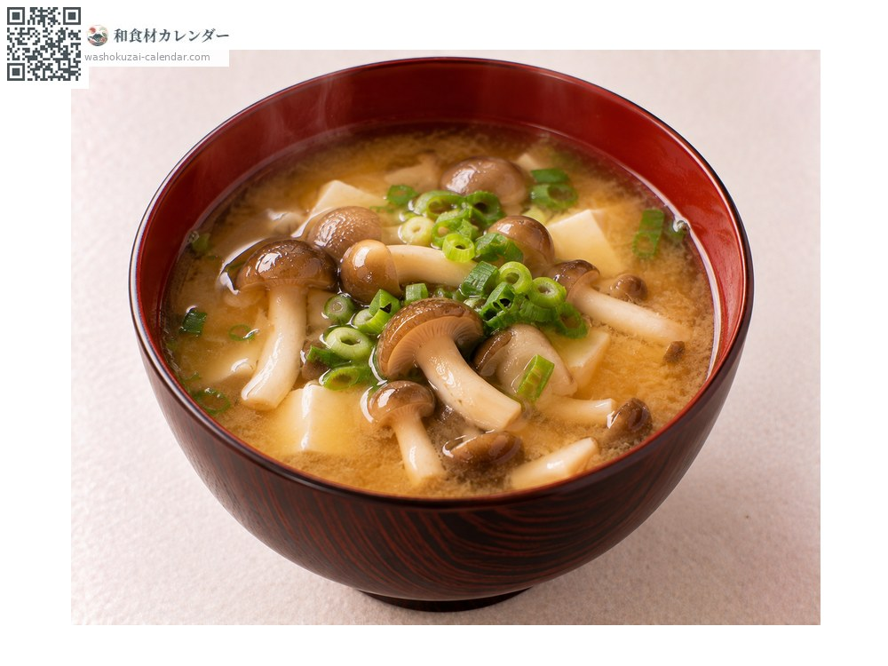
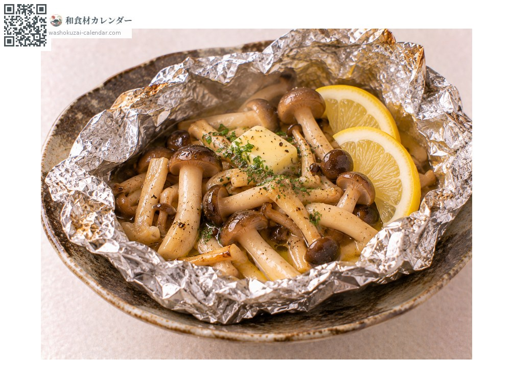

ผัก
เห็ดชิเมจิ
しめじ しめじ
อร่อยที่สุดในเดือน ก.ย., ต.ค., พ.ย.

ช่วงที่อร่อยที่สุด
ม.ค.
ก.พ.
มี.ค.
เม.ย.
พ.ค.
มิ.ย.
ก.ค.
ส.ค.
ก.ย.
ต.ค.
พ.ย.
ธ.ค.
ช่วงอร่อยที่สุดมีจำหน่าย
วิธีปรุง

ข้าวหุงเห็ด
หุงพร้อมข้าว ทั้งน้ำซุปและกลิ่นจะซึมเข้าเมล็ดข้าว

ผัดเนย
ผัดไฟแรงอย่างรวดเร็ว ปรุงแบบตะวันตกก็เข้ากัน

ใส่ซุป
ใส่ซุปมิโซะหรือซุปใส ให้รสชาติที่ดี

อบในฟอยล์
ห่อแล้วอบ กลิ่นจะถูกกักเก็บไว้
วิธีเลือก
หมวกยังไม่บานเกินไป ก้านหนาและขาว กอแน่น
วิธีเก็บรักษา
ห้ามล้าง ห่อกระดาษแช่เย็น ตัดโคนแล้วแยกเป็นส่วน ๆ แช่แข็งก็ได้
แหล่งผลิตหลัก
เกร็ดน่ารู้
ชิเมจิในสุภาษิตที่ว่า กลิ่นมัตสึทาเกะ รสชิเมจิ หมายถึงฮนชิเมจิที่เป็นของธรรมชาติ ที่ขายในตลาดส่วนใหญ่คือบุนะชิเมจิที่เพาะเลี้ยง ซึ่งเป็นคนละชนิด ฮนชิเมจิเพาะเลี้ยงยากจึงยังหายาก